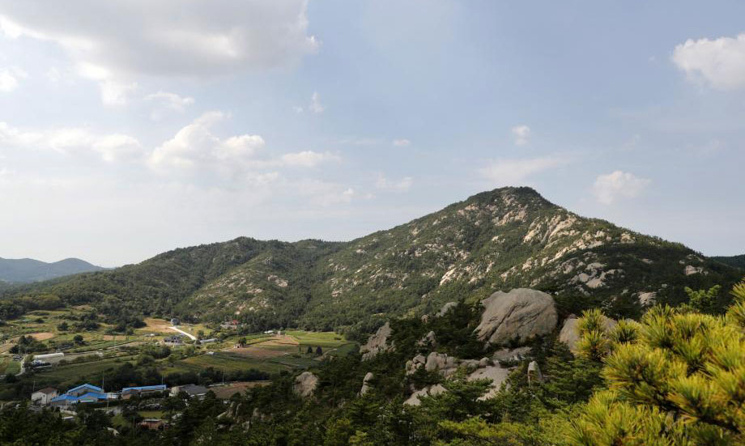
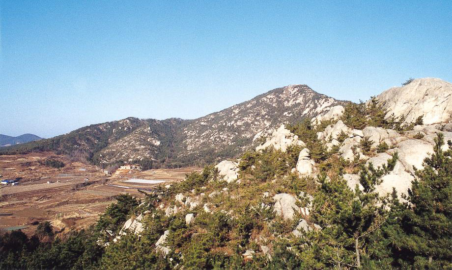
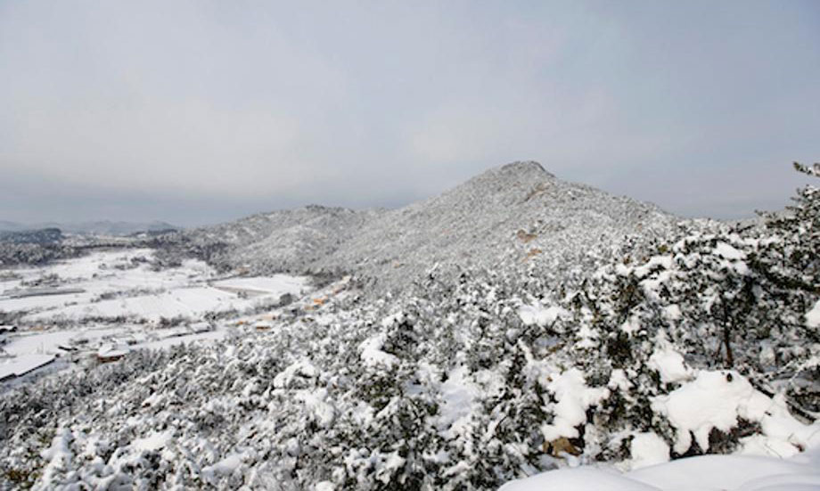

제 1경 백화산 설명
수려한 산세와 유서깊은 고적이자리잡은 명산 정상으로 오르면 서해의 리아스식 해안이 그림처럼 펼쳐진다.
-
눈 덮인 산봉우리의 모습이 하얀 천을 씌운 듯하다고 이름 붙여진 백화산은 높이 284m이다.
-
정상으로 가는 길에 만나는 기암 괴석과 소나무의 어울림이 좋다.
특히 산 정상에서 바라보는 일몰은 태안 최고의 경관이라고 해도 과언이 아니다. -

동문리쪽에서 백화산을 오르게 되면 태을암을 만나게 되는데, 태을암에는 백제의 보물이라 여겨지는 태안 동문리 마애삼존불이 봉안되어 있다.
-

특히 백화산 냉천골은 한 여름에도 서늘한 기운을 유지하는 곳이기 때문에 예로부터 주민들이 더위를 피해 찾았던 곳이다.